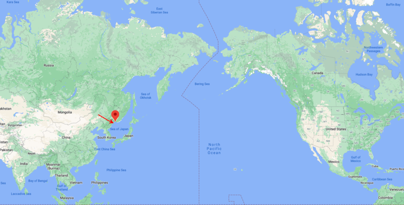
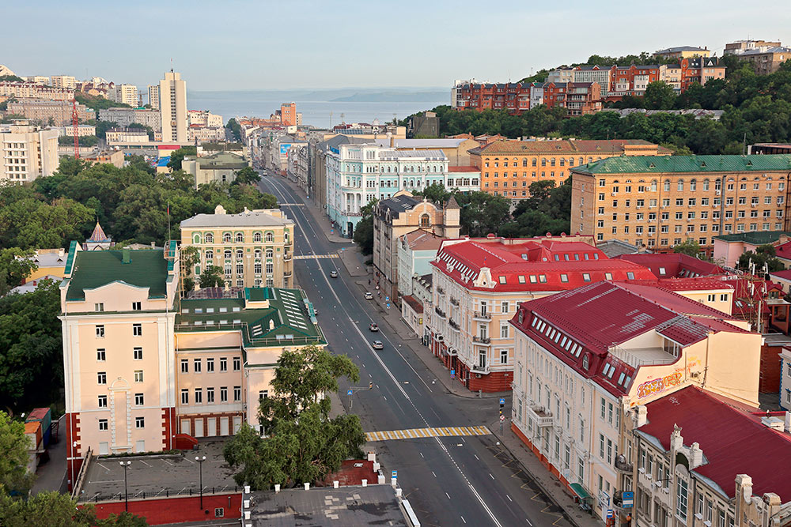
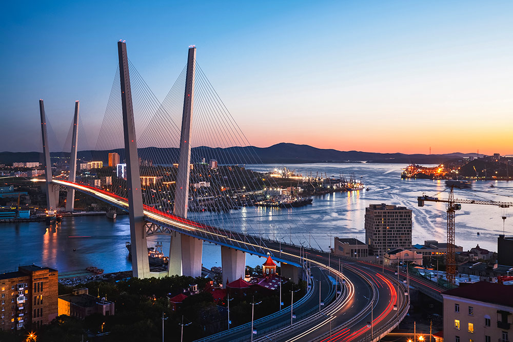

My name is Veronica. I am originally from Russia. I moved to Canada 2 years ago and now live in beautiful North Vancouver. Currently, I work for a robotics start-up company that designs and builds welding cobots (or “collaborative robots” - robots intended for direct human robot interaction within a shared space). Outside of work, I study programming, as I plan to make a career change within the next two years.
Hometown
I am from East coast of Russia - from a city called Vladivostok. It is a great place and here is why:
Vladivostok is a port city. It is located on a peninsula, washed by the Sea of Japan.

Vladivostok on the World Map
Vladivostok is called "Gates to Asia"
The city is 750 km away from Seoul, 1,335 km away from Beijing, and a little over 1,000 km away from Tokyo.
Vladivostok is a beautiful city where historical architecture meets infrastructure of the modern age.

Svetlanskaya Street, Vladivostok

Zolotoy Most (Golden Bridge), Vladivostok
Education
I graduated from the School of Law at Far Eastern Federal University (FEFU) in Vladivostok.
During this time, I also had a chance to participate in an exchange program with Korea University in Seoul. This experience is a highlight of my university years.
Hobbies
I am interested in many things. Below are some websites that help me explore what I like!